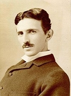

Nikola Tesla, né dans la nuit du 9 au 10 juillet 18561
à Smiljan dans l'Empire d'Autriche (actuelle Croatie)
et mort le 7 janvier 1943 à New York, est un inventeur
et ingénieur américain d'origine serbe. Il est notoirement
connu pour son rôle prépondérant dans le développement et
l'adoption du courant alternatif pour le transport et la distribution
de l'électricité.
Tesla a d'abord travaillé dans la téléphonie et l'ingénierie électrique
avant d'émigrer aux États-Unis en 1884 pour travailler avec Thomas Edison
puis avec George Westinghouse, qui enregistra un grand nombre de ses brevets.
Considéré comme l’un des plus grands scientifiques dans l’histoire de la
technologie, pour avoir déposé quelque 300 brevets couvrant au total
125 inventions (qui seront pour beaucoup attribuées à tort à Edison)
et avoir décrit de nouvelles méthodes pour réaliser la
« conversion de l’énergie », Tesla est reconnu comme l’un des ingénieurs
les plus créatifs de la fin du xixe et du début du xxe siècle. Quant à lui,
il préférait plutôt se définir comme un découvreur.